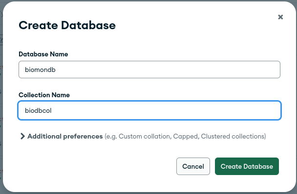
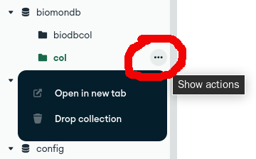
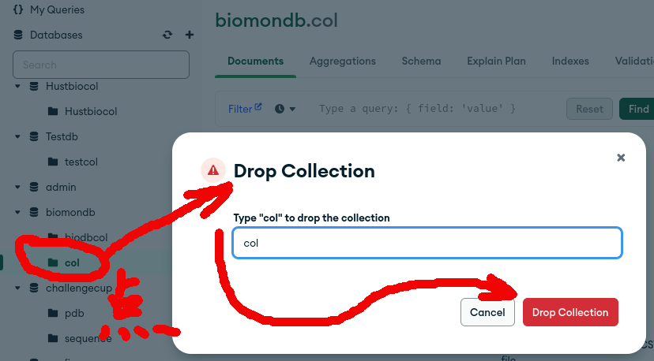
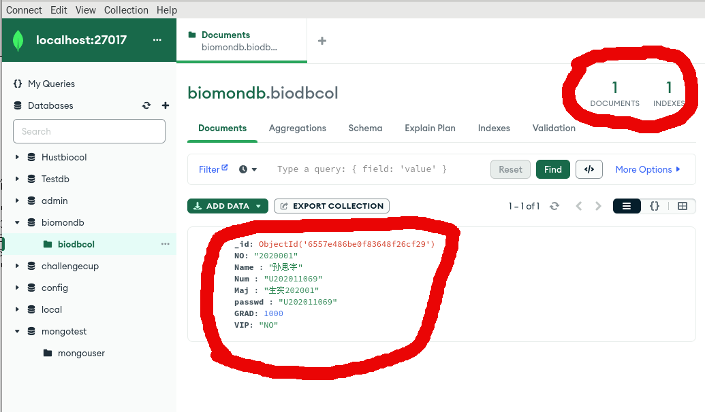
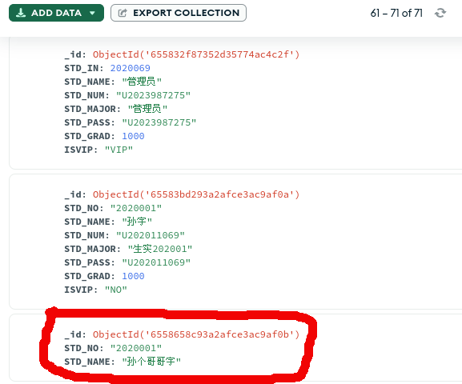
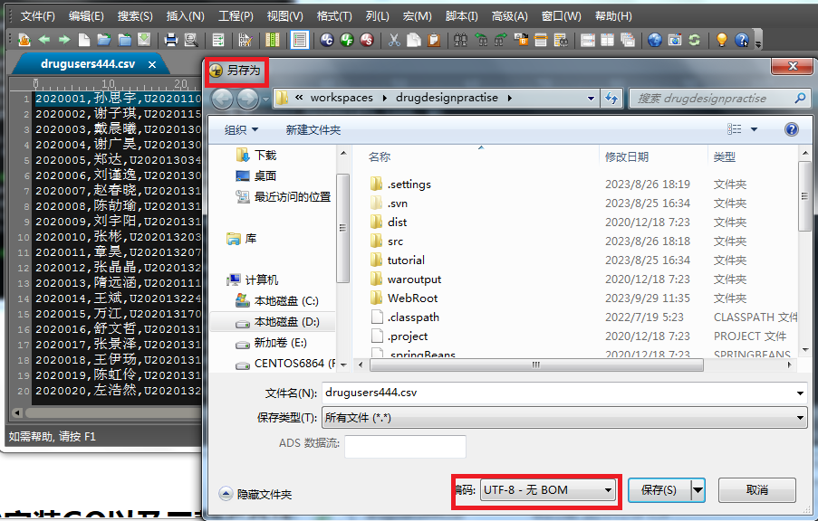
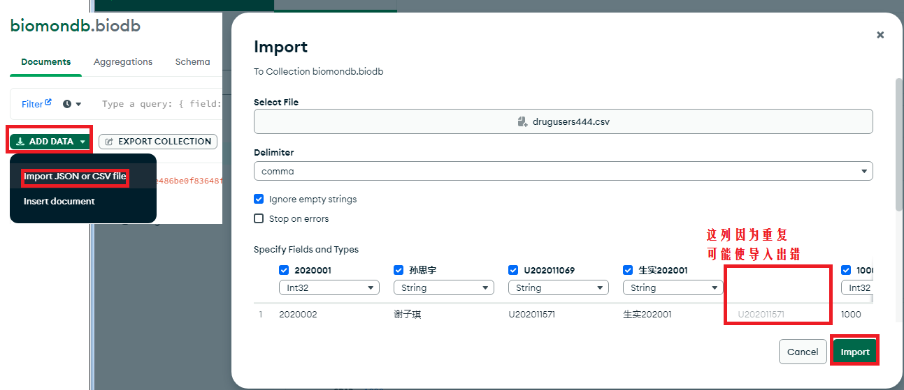
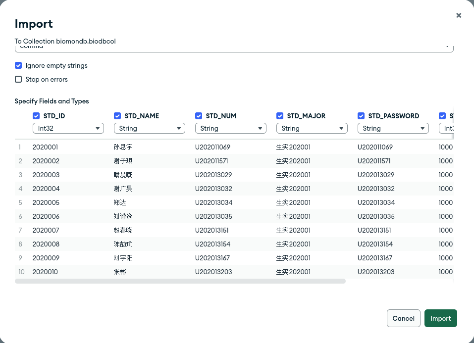
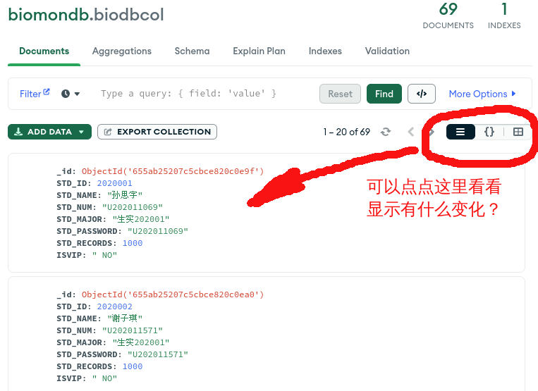
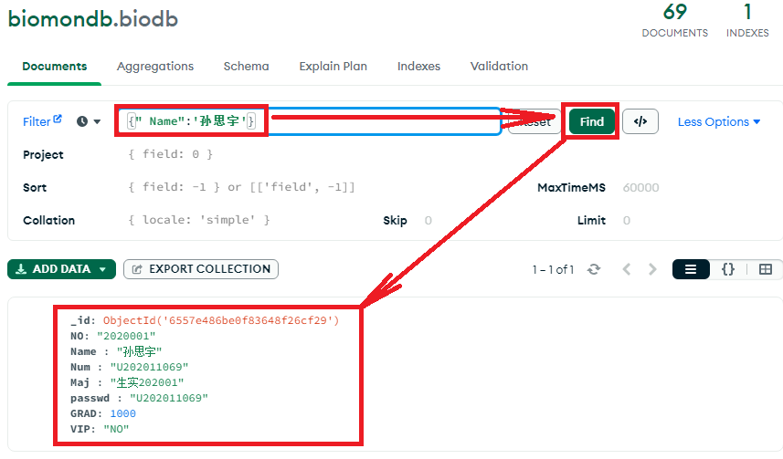

本科教学-数据库技术及应用(CENTOS环境)
上机练习八 NoSQL数据库MongoDB
基本操作及高级语言编程访问
一 上机内容:
1. MONGODB及图形管理界面简介; GO语言简介及基本语法
2. MONGODB及图形界面基本操作
3. 使用GO语言进行简单的数据库访问以及基于GO的web前后端数据库技术
二 上机目的: 了解非关系数据MongoDBnosql，非关系数据库的基本思想.
三 利用VSCODE进行调试GO语言及数据库访问.
准备工作: 本次上机将使用GO语言(即golang)访问mongodb数据库
请参照: MongoDB基础部分
上机操作部分 GO语言及其应用基础
启动MONGODB服务器:
#./mongod.exe -version //验证MongoDB的版本
[root@localhost bin]# ./mongod -version
CENTOS 7.9的版本信息:
db version v4.4.18
Build Info: {
"version": "4.4.18",
"gitVersion":
"8ed32b5c2c68ebe7f8ae2ebe8d23f36037a17dea",
"openSSLVersion": "OpenSSL 1.0.1e-fips
11 Feb 2013",
"modules": [],
"allocator": "tcmalloc",
"environment": {
"distmod":
"rhel70",
"distarch":
"x86_64",
"target_arch":
"x86_64 "
}
} |
# ./mongod -f ../etc/mongoDB.conf //启动服务端server, 注意mongoDB.conf的书写格式(本次上机课附件网页部分)
$ netstat -lnpt | grep mongo //检查进程和端口
(Not all processes could be identified, non-owned process info will not be shown, you would have to be root to see it all.)
tcp 0 0 0.0.0.0:27017 0.0.0.0:* LISTEN 2960/./bin/mongod //看看是不是启动了？？？？
// 关闭MongoDB 方式一：
./mongod -f ../etc/mongoDB.conf --shutdown
//直接用启动命令后面加一个--shutdown即可
$ netstat -lnpt | grep mongo //检查mongoServer是否还工作？？？
即mongod是否还在？？？
// 关闭MongoDB 方式二：
$ ./bin/mongo //启动mongoDB命令行界面Shell > use admin
switched to db admin
>db //查看当前数据库
> db.shutdownServer()
server should be down...
$ netstat -lnpt | grep mongo //再次检查mongoServer是否还工作？？？ 即mongod是否还在？？？
启动mongoDB命令行界面Shell
#/opt/mongodbrhel7/bin/mongo
$ ./mongo --port=27017
CENTOS 7.9运行mongo后的结果:
MongoDB shell version v4.4.18
connecting to: mongodb://127.0.0.1:27017/?compressors=disabled&gssapiServiceName=mongodb
Implicit session: session { "id" : UUID("42e947a6-d80e-4816-b176-85df2644593d") }
MongoDB server version: 4.4.18
---
The server generated these startup warnings when booting:
2023-04-08T21:52:41.178-04:00: You are running this process as the root user, which is not recommended
2023-04-08T21:52:41.179-04:00: You are running on a NUMA machine. We suggest launching mongod like this to avoid performance problems: numactl --interleave=all mongod [other options]
2023-04-08T21:52:41.179-04:00: /sys/kernel/mm/transparent_hugepage/enabled is 'always'. We suggest setting it to 'never'
2023-04-08T21:52:41.179-04:00: /sys/kernel/mm/transparent_hugepage/defrag is 'always'. We suggest setting it to 'never'
2023-04-08T21:52:41.179-04:00: Soft rlimits too low
2023-04-08T21:52:41.179-04:00: currentValue: 1024
2023-04-08T21:52:41.179-04:00: recommendedMinimum: 64000
---
---
Enable MongoDB's free cloud-based monitoring service, which will then receive and display
metrics about your deployment (disk utilization, CPU, operation statistics, etc).
The monitoring data will be available on a MongoDB website with a unique URL accessible to you
and anyone you share the URL with. MongoDB may use this information to make product
improvements and to suggest MongoDB products and deployment options to you.
To enable free monitoring, run the following command: db.enableFreeMonitoring()
To permanently disable this reminder, run the following command: db.disableFreeMonitoring()
---
>
|
高效NoSQL数据库利器：Mongodb完整教程
mongo shell 常用命令练习:
| 命令 |
说明 |
| db.version() |
查看数据库版本 |
| show dbs|show databases |
显示数据库列表 |
| use monbiodb |
切换数据库，如不存在创建数据库monbiodb |
db.dropDatabase()
|
删除数据库: 要先用:
>use monbiodb
再:
>db.dropDatabase() 即可删除monbiodb |
show collections|show tables
|
显示当前数据库的集合列表 |
db.biodbcol.stats()
|
查看集合biodbcol详情 |
db.biodbcol.drop()
|
删除集合biodbcol |
| show users |
显示当前数据库的用户列表 |
show roles
|
显示当前数据库的角色列表 |
| show profile |
显示最近发生的操作 |
| load(“xxx.js”) |
执行一个JavaScript脚本文件 |
db.biodbcol.help()
|
显示集合的帮助信息 |
db.help()
|
查询当前数据库支持的方法 |
| help |
查看mongodb支持哪些命令 |
| exit |
quit()退出当前shell |
MongoDB警告信息处理：
1.启动用户警告： 2023-04-08T21:52:41.178-04:00: You are running this
process as the root user, which is not recommended
表示：启动server尽量不要用root用户，用普通用户启动更安全。
更改方法：
创建mongodb专用的普通用户，将MongoDB的部署目录赋权给普通用户，用普通用户启动即可
更改所有权： chown -R catalyst /opt/mongodbrhel7）
查看日志文件：其中有：/opt/mongodbrhel7/data/WiredTiger.turtle: handle-open:
open: Permission denied， 删除即可。
2.大内存页警告
2023-04-08T21:52:41.179-04:00:
/sys/kernel/mm/transparent_hugepage/enabled is 'always'. We
suggest setting it to 'never'
2023-04-08T21:52:41.179-04:00:
/sys/kernel/mm/transparent_hugepage/defrag is 'always'. We suggest
setting it to 'never'
是由于大内存设置了always，MongoDB建议使用never
]$ vi
/sys/kernel/mm/transparent_hugepage/enabled
//打开看看内容： [always] madvise never
$ vi
/sys/kernel/mm/transparent_hugepage/defrag
//打开看看内容： [always] madvise never
临时关闭大内存页
# echo "never" >
/sys/kernel/mm/transparent_hugepage/enabled
# vi /sys/kernel/mm/transparent_hugepage/enabled
//打开看看内容： always madvise [never] 怎么样？
# echo "never" > /sys/kernel/mm/transparent_hugepage/defrag
# vi /sys/kernel/mm/transparent_hugepage/defrag
注：另有脚本可永久关闭大内存页，看看官方文档：https://docs.mongodb.com/manual/tutorial
/transparent-huge-pages/
3.优化limit警告
2023-04-08T23:00:17.645-04:00: Soft rlimits too low
2023-04-08T23:00:17.645-04:00:
currentValue: 1024
2023-04-08T23:00:17.645-04:00:
recommendedMinimum: 64000
提示的是limt设置的打开文件数太低
# cat >> /etc/profile<<EOF
//需要root用户权限
> ulimit -f unlimited //此行及以下为输入行
> ulimit -u unlimited
> ulimit -v unlimited
> ulimit -n 64000
> ulimit -m unlimited
> ulimit -u 64000
> EOF
# vi /etc/profile //看看有没有将上面的几行加进去？？？
# source /etc/profile
MongoDB shell中执行命令来创建数据库、插入数据、编辑数据、发布管理命令和删除数据。
显示数据库：
> show dbs //show database names 检查现有的数据库
admin 0.000GB
config 0.000GB
local 0.000GB
创建你的数据库:
与SQL不同，MongoDB没有数据库创建命令。直接输入use 关键词即可切换到指定数据库。如果该数据库不存在，将创建新数据库，如果该数据库已存在将链接到现有数据库。
要启动名为 “hustbiodb”的数据库，请键入:
>use hustbiodb => switched to db hustbiodb
> show dbs //看看huststd有没有？？？？
创建的数据库没有显示？这是因为我们还没有将数值保存到数据库中
> db //看看huststd有没有？？？？
键入 db 可确认刚创建的数据库: hustbiodb
也就查看当前数据库
>db.createCollection（表名称）： 创建表
>db.getCollection('表名称") 使用哪张表
>db.getMongo() 查看连接数据库的地址
> db.getMongo()
connection to 127.0.0.1:27017
删除操作：
>db.表名.drop() 删除表
>db.dropDatabase（）： 删除数据库
https://www.wbolt.com/mongodb-create-database.html
管理你的MongoDB数据库
有效管理MongoDB数据库的巧妙方法： 可通过MongoDB-compass或通过集合来实现。
相比与关系型数据库定义明确的表，有指定的数据类型和列，但NoSQL有集合而不是表。
这些集合没有任何结构，而且文档可以变化-----可有不同的数据类型和字段，而不需要在同一个集合中匹配另一个文档的格式。
创建一个名为 "Hustbiocol"的集合，并向其中添加一个文档。
输入以下行：
>use Hustbiocol
>
db.Hustbiocol.insert( //db “指的是当前连接的数据库。Hustbiocol是
数据库中新创建的集合。
... {
... "Huststdname":"Huster",
... "LifeDep":"Bioinfos"
... }
... ) //记得这里的： ） 结束！！！
WriteResult({ "nInserted" : 1
}) //返回 WriteResult({ "nInserted" : 1
}) 表示插入成功
> show dbs
admin 0.000GB
config 0.000GB
local 0.000GB
mongotest 0.000GB
Hustbiocol
0.000GB //看到这里没有？？？？
这个就是新建的数据库,其中还有个集合： Hustbiocol
这里没有设主键，MongoDB会自动创建一个名为”_id “的主键字段，并为其设置一个默认值
检查JSON格式的集合：
> db.Hustbiocol.find().forEach(printjson)
{
"_id" :
ObjectId("643279f7a32075d91a34014c"),
//主键
"Huststdname" : "Huster",
"LifeDep" : "Bioinfos"
}
上面的内容是不是刚才输入的？？？？？？
自定义主键：
> db.Hustbiocol.insert(
... {
... "_id" : 1,
... "Huststdname":"watis",
... "LifeDep":"Biosci"
... }
... )
WriteResult({ "nInserted" : 1 })
>
db.Hustbiocol.find().forEach(printjson)
//再看看如何？？？？
这次的结果是不是集合中多了一个：主键， _id “值被设置为 “1”，而不是被自动分配一个值
启动数据库管理GUI： 数据可视化、性能分析，以及对数据、数据库和集合的CRUD（创建、读取、更新、删除）访问$ mongodb-compass
启动mongodb-compass可能会报错：
1. FATAL:electron_main_delegate.cc(299)] Running as root without --no-sandbox is not supported： 不能用root运行mongodb-compass
2. FATAL:setuid_sandbox_host.cc(157)] The SUID sandbox helper binary was found, but is not configured correctly.
Rather than run without sandboxing I'm aborting now.
You need to make sure that /usr/lib/mongodb-compass/chrome-sandbox is owned by root and has mode 4755.
表示： 需要
# chmod 4755 /usr/lib/mongodb-compass/chrome-sandbox （需要root权限）
点击start:
点击Connect:
GUI创建一个MongoDB数据库
1. 在GUI中点击带圈的加号，即可弹出：Create Database的窗口：
输入：
数据库的名称：biomondb
第一个集合名：biodbcol
结果如下：点击 Create Database, 即可创建一个新的数据库biomondb以及集合biodbcol（表）

给数据库中插入更多文件：
点击数据库名称: biomondb
点击集合的名称： biodbcol
即可看到GUI有侧有多个标签： Documents, Aggregations, Schema, Explain Plan, Indexes, Validation
Documents标签。
然后，你可以点击Add Data按钮，将一个或多个文档插入你的集合中。
命令行方式插入一个文档：
mongodb insert
操作可以分为四种，分别是：insert、save、insertOne、insertMany。
MongoDB插入操作练习：
向集合里插入记录时，无须事先对数据存储结构进行定义。如果待插入的集合不存在，则插入操作会默认创建集合。
插入操作以单个集合为目标，MongoDB 中的所有写入操作都是单个文档级别的原子操作。
将数据插入到MongoDB的过程中，如果没有指定 _id，那么MongoDB
会自动的为其生成一个；插入成功以后，将会返回一个 document，其中包含了当前成功插入的 document 的
_id。
进入mongo DB的命令行模式
$ ./mongo
MongoDB shell version v4.4.18
connecting to:
mongodb://127.0.0.1:27017/?compressors=disabled&gssapiServiceName=mongodb
Implicit session: session { "id" :
UUID("bae09ec6-8d1f-4671-8765-967098b5f53e") }
MongoDB server version: 4.4.18
> //结果会出现提示符！！！！在这里输入命令就可以了
Insert操作：将单个或多个文档插入到集合中
向集合中插入数据的语法
db.collection.insert(
<document or array of documents>, //参数表示可设置插入一条或多条文档
{
writeConcern: <document>, //可选字段，表示自定义写出错的级别，是一种出错捕捉机制
ordered: <boolean> //可选字段，默认为 true，在数组中执行文档的有序插入，并且如果其中一个文档发生错误，MongoDB 将返回而不处理数组中的其余文档；
若为 false: 执行无序插入，若其中一个文档发生错误，则忽略错误，继续处理数组中的其余文档
}
)
如： db.testcol.insert({ item : "card", qty : 15 },ordered:true)
其中： testcol 为集合名，insert() 为插入文档命令，三者之间用连接。
> db.test.insert( { item : "card", qty : 15 })
WriteResult({ "nInserted" : 1 })
> db.test.find()
{ "_id" : ObjectId("65611536b297cbce61b6ece4"), "item" : "card", "qty" : 15 }
看看是不是新加了: _id, Objectld 值与执行操作时的机器和时间有关，因此，用户执行这段命令后的返回值与示例中的值是不同的
> db.test.insert({_id:10,item:"box",qty:20})
WriteResult({ "nInserted" : 1 })
> db.test.find()
{ "_id" : ObjectId("65611536b297cbce61b6ece4"), "item" : "card", "qty" : 15 }
{ "_id" : 10, "item" : "box", "qty" : 20 } //可以看到新插入文档的 id 值为设置的 id 值
插入的多个文档无须具有相同的字段。例如，下面代码中的第一个文档包含一个 _id 字段和一个 type
字段，第二个和第三个文档不包含 _id 字段。因此，在插入过程中，MongoDB 将会为第二个和第三个文档创建默认
_id 字段
> db.test.insert(
... [
... { _id:
11, item: "pencil", qty: 50, type: "no.2" },
... { item:
"pen", qty: 20 },
... { item:
"eraser", qty: 25 }
... ]
... )
BulkWriteResult({
"writeErrors" : [ ],
"writeConcernErrors" : [ ],
"nInserted" : 3,
"nUpserted" : 0,
"nMatched" : 0,
"nModified" : 0,
"nRemoved" : 0,
"upserted" : [ ]
})
> db.test.find()
{ "_id" : ObjectId("65611536b297cbce61b6ece4"), "item" :
"card", "qty" : 15 }
{ "_id" : 10, "item" : "box", "qty" : 20 }
{ "_id" : 11, "item" : "pencil", "qty" : 50, "type" : "no.2"
}
{ "_id" : ObjectId("656116c4b297cbce61b6ece5"), "item" :
"pen", "qty" : 20 } //可以看到系统自动为这两个文档创建了字段
{ "_id" : ObjectId("656116c4b297cbce61b6ece6"), "item" :
"eraser", "qty" : 25 }
用变量方式插入文档
> document= ({ name: "c语言", price: 40 }) //document 为变量名.
> db.test.insert(document)
有序地插入多条文档的代码
db.test.insert([
{_id:10, item:"pen", price:"20" }, //这个_id有相同的情况，这个步插入，而且后面的也不插入。
{_id:12, item:"redpen", price: "30" },
{_id:11, item:"bluepen", price: "40" }
],
{ordered:true}
)
在设置 ordered:true 时，插入的数据是有序的，如果存在某条待插入文档和集合的某文档 _id
相同的情况，_id 相同的文档与后续文档都将不再插入。
在设置 ordered:false 时，除了出错记录（包括 _id 重复）外其他的记录继续插入。
看看：
>db.col.insert({"STD_ID": "2020001","STD_NAME": "孙宇",
"STD_NUM": "U202011069", "STD_MAJOR":
"生实202001","STD_PASSWORD": "U202011069", "STD_RECORDS": 1000,
"ISVIP": "NO" })
WriteResult({ "nInserted" : 1 }) //
表示插入了一条记录， 注意，看看插入到哪里了？
> db.getCollectionNames()
查看当前数据库有哪些表
[ "biodbcol" ]
用compass看看上面那条记录插入到哪里了？
//如果没有选数据库，会用缺省的
删除集合col：
 ======>>>>>>

按照提示，输入集合名： col, 点： Drop Collection, 即可删除不要的集合。
> db
//看看当前用的是哪个数据库？？？？
test
> use biomondb
switched to db biomondb
> db
biomondb
> db.biodbcol.insert({"STD_ID": "2020001","STD_NAME": "孙宇",
"STD_NUM": "U202011069", "STD_MAJOR":
"生实202001","STD_PASSWORDWORD": "U202011069", "STD_RECORDS":
1000, "ISVIP": "NO" })
WriteResult({ "nInserted" : 1 }) //
表示插入了一条记录， 注意，看看插入到哪里了？
//注意: db.biodbcol.insert(.......)
如果没有biodbcol这个集合，就会创建一个！！！！！！！
将记录写成如下所示:
{
"_id": {
"$oid": "6557e486be0f83648f26cf29"
},
"STD_ID":
"2020001",
"STD_NAME":
"孙思宇",
"STD_NUM":
"U202011069",
"STD_MAJOR":
"生实202001",
"STD_PASSWORDWORD":
"U202011069",
"STD_RECORDS":
1000,
"ISVIP": "NO"
}
最后，单击 “Insert“，将文件添加到你的集合中。

这就是插入一个记录后的样子：看看DOCUMENTS 是不是为1？
如果有重复会报错:
E11000 duplicate key error collection: biomondb.biodb index: _id_ dup key: { _id: ObjectId('6557e486be0f83648f26cf29') }
修改相应项再点insert:
Inserting Document 如果出现这个表示可以了.
> db.biodbcol.insert({"STD_ID": "2020001","STD_NAME": "孙哥"}) //不完全的记录插入
WriteResult({ "nInserted" : 1 })
打开compass看看是不是也插入一条？？？ 确实是插入了一条！！！！

> db.getCollection("biodbcol").insert({"STD_ID": "2024002","STD_NAME": "侯孙哥"})
WriteResult({ "nInserted" : 1 })
insertOne() 插入一条文档
db.test.iusertone( { item: "card", qty: 15 } );
insertMany() 插入多条文档
db.test.insertMany([
{ item: "card", qty: 15 },
{ item: "envelope", qty: 20 },
{ item: "stamps", qty:30 }
]);
插入多条文档，即批量导入数据, linux nedd:
https://www.mongodb.com/try/download/database-tools, 记得要选适当的版本哟！！
linux下需要用到mongodb database tools：
下载：
$wget
https://fastdl.mongodb.org/tools/db/mongodb-database-tools-rhel70-x86_64-100.6.1.tgz
(mongodb-database-tools-rhel72-s390x-100.9.3.tgz 不能用？？？？)
解压后即可使用。
使用方式:Windows下用git bash, Linux下用Bash就可以了:
//cd /e/mongodbwinx8664enterprise4223/bin/
使用 csv 导入数据的命令方法: 将表.csv 文件导入到 test库，sName集合中，
导入时必须指定列名称: --fields "STD_ID,STD_NAME,STD_NUM,STD_MAJOR,STD_PASSWORD,STD_RECORDS,ISVIP" (如果 csv 文件第一行是列名称，会怎么样? 试试? )
导入数据分几种情况:
1.原始表(集合)是空的: 不需要用 -drop
./mongoimport.exe -d biomondb -c biodbcol --type csv --fields "STD_ID, STD_NAME, STD_NUM, STD_MAJOR,STD_PASSWORD,STD_RECORDS,ISVIP" D:\\APPsoftwares\\myeclipse2021518\\workspaces\\drugdesignpractise\\drugusers.csv
./mongoimport -d biomondb -c biodbcol --type csv --fields "STD_ID, STD_NAME, STD_NUM, STD_MAJOR,STD_PASSWORD,STD_RECORDS,ISVIP" /home/catalyst/Workspaces/MyEclipse/drugdesignpractise/drugusers.csv
./mongoimport.exe -d biomondb -c biodbcol --type csv -h 222.20.94.229 -u biodbuser -p biodb123 --fields "STD_ID, STD_NAME, STD_NUM, STD_MAJOR,STD_PASSWORD,STD_RECORDS,ISVIP" /home/catalyst/Workspaces/MyEclipse/drugdesignpractise/drugusers.csv
2.想重新导入全新的数据: 需要用 -drop先清除原来的数据(这个可能会重新生成一个新的数据库rop，并不是你想要的那个导入过程!!!!!)
./mongoimport.exe -d biomondb -c biodb --type csv --fields "STD_ID, STD_NAME, STD_NUM, STD_MAJOR,STD_PASSWORD,STD_RECORDS,ISVIP" D:\\APPsoftwares\\myeclipse2021518\\workspaces\\drugdesignpractise\\drugusers.csv -drop
3.要导入的csc中有表头即列名在一起导入时需要去除: 需要加 --headerline
其实: --headerline 参数会自动指定使用csv文件第一行内的字段名，作为文档的字段名称
./mongoimport.exe -d biomondb -c biodb --type csv --fields "STD_ID, STD_NAME, STD_NUM, STD_MAJOR,STD_PASSWORD,STD_RECORDS,ISVIP" D:\\APPsoftwares\\myeclipse2021518\\workspaces\\drugdesignpractise\\drugusers.csv -drop --headerline
4. 如果需要指定每列数据的性质: --columnsHaveTypes
./mongoimport.exe -d biomondb -c biodb --type csv --columnsHaveTypes --fields "STD_ID.int32(), STD_NAME.string(), STD_NUM.string(), STD_MAJOR.string(), STD_PASSWORD.string(),STD_RECORDS.int32(),ISVIP.string()" D:\\APPsoftwares\\myeclipse2021518\\workspaces\\drugdesignpractise\\drugusers.csv
5.如果CSV中有中文字可能导入时会出现乱码: 可通过下在面的方式导出CSV,格式为UTF-8 无BOM，再导入到mongoDB就可以了.

对于Linux需要用gedit另存为： UTF-8就可以了！！
6. 也可以直接用 MongoDB Compass导入, 图形化界面, 直观: 但是有可能导入时会不正常, 比如两列完全一样时.

怎么解决?
可以在CSV第一行加上表头即列名就可以了:
比如这里的例子:
STD_ID,STD_NAME,STD_NUM,STD_MAJOR,STD_PASSWORD,STD_RECORDS,ISVIP <<<<<<<< 加上这一行就可以了
2020001,孙思宇,U202011069,生实202001,U202011069,1000, NO
2020002,谢子琪,U202011571,生实202001,U202011571,1000, NO
2020003,戴晨曦,U202013029,生实202001,U202013029,1000, NO
看看效果:

增加列名后在Compass中图形化导入的效果
现在看看是不是所有列都没有问题了?
还可以直接在图形界面为各列设置数据类型.
看看导入后的样子:

检索查寻mongoDB中的集合(表)
在Filter文本域中输入: {" Name":'孙思宇'}

排序
>db.biodbcol.find().sort({STD_NUM:1})
//1 表示升序； -1 表示 降序
查找指定列需要的数据
>db.biodbcol.find({},{key:1}) 显示或隐藏某字段的数据 0 隐藏 1 显示
模糊查询
>db.biodbcol.find({STD_NAME:/孙/}) //查找含有某数据的所有数据
> db.biodbcol.find({STD_NAME:/孙/})
{ "_id" : ObjectId("655832f87352d35774acbeb"), "STD_ID" : 2020001, "STD_NAME" : "孙思宇", "STD_NUM" : "U202011069", "STD_MAJOR" : "生实202001", "STD_PASSWORDWORD" : "U202011069", "STD_RECORDS" : 1000, "ISVIP" : " NO" }
{ "_id" : ObjectId("65583bd293a2afce3ac9af0a"), "STD_ID" : "2020001", "STD_NAME" : "孙宇", "STD_NUM" : "U202011069", "STD_MAJOR" : "生实202001", "STD_PASSWORDWORD" : "U202011069", "STD_RECORDS" : 1000, "ISVIP" : "NO" }
{ "_id" : ObjectId("6558658c93a2afce3ac9af0b"), "STD_ID" : "2020001", "STD_NAME" : "孙哥宇" }
{ "_id" : ObjectId("6558689d93a2afce3ac9af0c"), "STD_ID" : "2020001", "STD_NAME" : "公孙哥" }
>db.biodbcol.find({STD_NAME:/^孙/}) 查找以某数据开头的数据
>db.biodbcol.find({STD_NAME:/宇$/}) 查找以某数据结尾的数
> db.biodbcol.find({STD_NAME:/宇$/})
{ "_id" : ObjectId("655832f87352d35774ac4beb"), "STD_ID" : 2020001, "STD_NAME" : "孙思宇", "STD_NUM" : "U202011069", "STD_MAJOR" : "生实202001", "STD_PASSWORD" : "U202011069", "STD_RECORDS" : 1000, "ISVIP" : " NO" }
{ "_id" : ObjectId("655832f87352d35774ac4c03"), "STD_ID" : 2020025, "STD_NAME" : "阮佳宇", "STD_NUM" : "U202013227", "STD_MAJOR" : "生药202001", "STD_PASSWORD" : "U202013227", "STD_RECORDS" : 1000, "ISVIP" : " NO" }
{ "_id" : ObjectId("655832f87352d35774ac4c11"), "STD_ID" : 2020039, "STD_NAME" : "唐骁宇", "STD_NUM" : "U202013179", "STD_MAJOR" : "生科202001", "STD_PASSWORD" : "U202013179", "STD_RECORDS" : 1000, "ISVIP" : " NO" }
{ "_id" : ObjectId("65583bd293a2afce3ac9af0a"), "STD_ID" : "2020001", "STD_NAME" : "孙宇", "STD_NUM" : "U202011069", "STD_MAJOR" : "生实202001", "STD_PASSWORD" : "U202011069", "STD_RECORDS" : 1000, "ISVIP" : "NO" }
{ "_id" : ObjectId("6558658c93a2afce3ac9af0b"), "STD_ID" : "2020001", "STD_NAME" : "孙个哥哥宇" }
查找总共多少条数据
> db.biodbcol.find().count()
72
添加一列
>db.biodbcol.update({}, { $set: {
"ISON": "int32"} }, { multi: true })
//db.biodbcol代表要修改的表，$set操作符用于设置新的列名和值。{multi: true}表示对所有文档进行更新。
删除一列
>db.biodbcol.update({}, {$unset: {"ISON": "" } }, false, true)
> db.biodbcol.update({}, { $set: { "ISON": 32} }, { multi: true }) //给biodbcol表增加一个名为ISON的列，并设置所有文档的age列值为32
WriteResult({ "nMatched" : 73, "nUpserted" : 0, "nModified" : 73 })
验证结果
> db.biodbcol.find()
可以看到新的ISON列已经成功添加到了表中，并且所有文档的ISON列值为32
使用GO来访问mongodb:
CENTOS79安装GO以及三款GO语言小插件
vi $HOME/.bash_profile
export GOROOT=/opt/myoptgo
export PATH=$PATH:$GOROOT/bin
source ~/.bash_profile
$ go version
go version go1.20.2 linux/amd64
配置环境变量
GOROOT: 指向GOLANG开发包的安装路径如: /opt/myoptgo
(在这个目录里就是GO的那些软件了)
GOPATH: 这个变量可以直接指向GO项目的src目录, 后期下载的库为放在这里便于调用。 GOPATH 会有一个默认目录,
比如linux下为/home/catalyst/go。
由于 go1.11 之后使用 go mod 来管理依赖包，不再强制我们必须把代码写在 GOPATH/src
目录下，所以使用默认即可，无需修改
配置 GOPROXY
$ go env -w GO111MODULE=on
$ go env -w GOPROXY=https://goproxy.cn,direct
将要安装Go模块下的tools三个小插件，顺带把debug功能开启。
gocode是代码自动补全程序；
guru代码导航程序；
godef代码跳转程序（ctrl+鼠标左击，查看定义的代码）；
gdb64支持debug的程序。
1、先来安装gocode
打开CMD命令行，进入GO安装目录的src文件夹下，运行以下命令
$ cd /run/media/catalyst/MDDATA/goworkspaces/wtsgo/src/gomongo
$ cd /opt/myoptgo/go/src/ (again!!)
#go get -u github.com/nsf/gocod
#get gocode now
]$ /opt/myoptgo/go/bin/go get -u github.com/nsf/gocode
go: downloading golang.org/x/net
v0.4.1-0.20230214201333-88ed8ca3307d
go: downloading golang.org/x/crypto
v0.3.1-0.20221117191849-2c476679df9a
go: downloading golang.org/x/crypto v0.7.0
go: downloading golang.org/x/net v0.8.0
go: downloading golang.org/x/sys v0.3.0
go: downloading golang.org/x/text v0.5.0
go: downloading golang.org/x/sys v0.7.0
go: downloading golang.org/x/text v0.8.0
go: added github.com/nsf/gocode v0.0.0-20230322162601-b672b49f3818
go: upgraded golang.org/x/crypto
v0.3.1-0.20221117191849-2c476679df9a => v0.7.0
go: upgraded golang.org/x/net v0.4.1-0.20230214201333-88ed8ca3307d
=> v0.8.0
go: upgraded golang.org/x/sys v0.3.0 => v0.7.0
go: upgraded golang.org/x/text v0.5.0 => v0.8.0
#go build github.com/nsf/gocode ==>> /run/media/catalyst/MDDATA/goworkspaces/wtsgop/src/main/gocode
将gocode拷贝到Go安装目录的bin文件下
$ mv gocode /opt/myoptgo/bin/
2、安装guru
$ /opt/myoptgo/go/bin/go get -u golang.org/x/tools/cmd/guru
go: downloading golang.org/x/mod v0.10.0
go: upgraded golang.org/x/mod v0.9.0 => v0.10.0
go: upgraded golang.org/x/sys v0.6.0 => v0.7.0
$ /opt/myoptgo/go/bin/go build golang.org/x/tools/cmd/guru
$ mv guru /opt/myoptgo/bin/
3、安装godef
$ /opt/myoptgo/go/bin/go get github.com/rogpeppe/godef
$ /opt/myoptgo/go/bin/go build github.com/rogpeppe/godef
OK: NOW HAVE
/run/media/catalyst/MDDATA/goworkspaces/wtsgo/src/gomongo/godef
mv godef /opt/myoptgo/bin/
$ /opt/myoptgo/bin/go build gomongo.go =>
/opt/myoptgo/go/pkg/tool/linux_amd64/compile: here have this
file!!!!!!! go: no such tool "compile"
关于 go get 和 go.mod
go mod tidy 删除掉无用的模块
run in myeclipse:
有报错Resouce doesnt have a corresponding Go package
需要新建main路径
GO 框架:
https://github.com/zeromicro/go-zero
go get -u github.com/zeromicro/go-zero
运行VSCODE进行数据库访问:
$ ./code --no-sandbox //CENTOS 7.9 OK!!!!!!!!!!!!!!!!

提示：安装git版本
yum install https://repo.ius.io/ius-release-el7.rpm https://dl.fedoraproject.org/pub/epel/epel-release-latest-7.noarch.rpm
Running transaction
正在安装 : ius-release-2-1.el7.ius.noarch 1/1
验证中 : ius-release-2-1.el7.ius.noarch 1/1
已安装:
ius-release.noarch 0:2-1.el7.ius
#yum makecache //
must remove first !!!!!
#yum install git236
#git --version //
点击VSCode主界面左侧的Extension按钮, 结果会打开如下的界面： 输入GO，
即可安装GO Extension:

安装GO支持：Go for Visual Studio Code
GOLANG连接MongoDB练习
1. GALANG独立访问MongoDB数据库
编写GOLANG源代码：main.go // 可以用VSCode
$/opt/myoptgo/bin/go build mgodb.go
//可能需要下载驱动： /opt/myoptgo/bin/go get
go.mongodb.org/mongo-driver/mongo
$ /opt/myoptgo/go/bin/go build main.go
2.在MongoDB中执行JavaScript文件
MongoDB是一个开源的NoSQL数据库，它支持使用JavaScript进行数据操作和管理。通过执行
JavaScript文件，我们可以方便地批量处理和操作数据库中的数据。
编写文件：
var conn = new Mongo("localhost:27017");
var db = conn.getDB("biomondb");
db.biodbcol.insertOne({ "STD_ID" : 2020025, "STD_NAME" : "阮佳宇", "STD_NUM" : "U202013227", "STD_MAJOR" : "生药202001", "STD_PASSWORD" : "U202013227", "STD_RECORDS" : 1000, "ISVIP" : " NO" });
var stddoc = db.biodbcol.findOne({ "STD_NAME" : "阮佳宇" });
printjson(stddoc);
************************************************************************
执行JavaScript文件: 使用mongo命令行工具
$ ./mongo biomondb.js //直接在命令行操作
MongoDB shell version v4.4.18
connecting to:
mongodb://127.0.0.1:27017/?compressors=disabled&gssapiServiceName=mongodb
Implicit session: session { "id" :
UUID("2042f671-29eb-4887-9e32-280586a831b8") }
MongoDB server version: 4.4.18
{
"_id" :
ObjectId("655cba15d4948555b08b5257"),
"STD_ID" : 2020025,
"STD_NAME" : "阮佳宇",
"STD_NUM" : "U202013227",
"STD_MAJOR" : "生药202001",
"STD_PASSWORD" : "U202013227",
"STD_RECORDS" : 1000,
"ISVIP" : " NO"
}
或进入mongo命令终端：
$ ./mongo
> use biomondb
switched to db biomondb
> load("biomondb.js")
{
"_id" :
ObjectId("655cbcf99c307cd6482bfbae"),
"STD_ID" : 2020025,
"STD_NAME" : "阮佳宇",
"STD_NUM" : "U202013227",
"STD_MAJOR" : "生药202001",
"STD_PASSWORD" : "U202013227",
"STD_RECORDS" : 1000,
"ISVIP" : " NO"
}
true
用MongoDB compass打开数据库看看，有没有插入新的记录？
命令行查看插入结果：
$ ./mongo
> use biomondb
switched to db biomondb
> db.biodbcol.find()
{ "_id" : ObjectId("655cba7c7aa340760a9733b7"), "STD_ID" :
2020025, "STD_NAME" : "阮佳宇", "STD_NUM" : "U202013227",
"STD_MAJOR" : "生药202001", "STD_PASSWORD" : "U202013227",
"STD_RECORDS" : 1000, "ISVIP" : " NO" }
多个JavaScript文件的执行
有多个JavaScript文件需要执行，我们可以在一个脚本文件中调用它们
创建一个名为main.js的脚本文件，其中包含对其他JavaScript文件的调用
编写主文件：
*******************************
load("bioinfo01.js");
load("bioinfo02.js");
load("bioinfo03.js");
************************************
请仿照上面的例子编写：bioinfo01.js， bioinfo01.js，bioinfo01.js， 在执行：biomonmain.js
$mongo biomonmain.js
通过执行JavaScript文件，可以方便地向MongoDB中批量处理和操作数据。通过创建包含我们想要执行的
JavaScript代码的文件，并使用mongo命令行工具来执行这些文件。无论是插入数据、更新数据还是查询数
据，JavaScript文件可以帮助我们更高效地管理MongoDB数据库。
思考练习：如何创建JavaScript文件、执行单个JavaScript文件和执行多个JavaScript文
件，使得可以直接在WEB中操作MongoDB。
3. GALANG访问MongoDB数据库:web版
用VSCode打开一个GO目录：(即目录prac8gomondb2)
会提示: Do you trust the authors of the files in this
folder? 回答是肯定的。

换个地方打开含有GO代码的目录或workspace：会激活go for vscode
extension插件提示这个
在
Go status
工具栏 会显示在窗口左下角, 并显示GO的版本.
VSCode的GO extension与
go,
gopls,
dlv
以及其他的工具有关. 如果这些工具有丢失则会出现 ⚠️
Analysis Tools
Missing 警告.
点击这个警告即可下载依赖.
运行:
Starting: /home/catalyst/go/bin/dlv dap --listen=127.0.0.1:29830 --log-dest=3 from /run/media/catalyst/MDDATA/goworkspaces/wtsgop/src/heweb
DAP server listening at: 127.0.0.1:29830
Build Error: go build -o /run/media/catalyst/MDDATA/goworkspaces/wtsgop/src/heweb/__debug_bin -gcflags all=-N -l .
go: go.mod file not found in current directory or any parent directory; see 'go help modules' (exit status 1)
新建一个空文件： go.mod
再次RUN：会提示要运行：
$ go mod edit -module=example.com/mod //直接给go.mod中加入一行： module example.com/mod
再次RUN： OK？？？？！！！！！
Starting: /home/catalyst/go/bin/dlv dap --listen=127.0.0.1:33840 --log-dest=3 from /run/media/catalyst/MDDATA/goworkspaces/wtsgop/src/heweb
DAP server listening at: 127.0.0.1:33840
在浏览器中输入：http://localhost:8090/hello： 看看？？？？
http://localhost:8090/world
4. GALANG访问MongoDB数据库:web版
prac8gomondb3
请求处理: 1 url参数处理(get) url.go
package main
import (
"log"
"net/http"
)
func helloHandler(writer http.ResponseWriter, request
*http.Request) {
method := request.Method
println(method)
url := request.URL
values := url.Query()
userName := values.Get("userName")
password := values.Get("password")
println(userName, password)
}
func main() {
http.HandleFunc("/hello", helloHandler)
err := http.ListenAndServe("localhost:8090",
nil)
log.Fatal(err)
}
运行VSCode：
点VSCode的RUN菜单中的RUN Withou Debugging:
VSCode的DebugConsole窗口显示：
Starting: /home/catalyst/go/bin/dlv dap --listen=127.0.0.1:11417
--log-dest=3 from
/run/media/catalyst/MDDATA/goworkspaces/wtsgop/src/heweb
DAP server listening at: 127.0.0.1:11417
切换到浏览器访问：
http://localhost:8090/hello?userName=张三&password=1234
结果会在VSCodeDebugConsole窗口打印：
GET //
张三 1234 // user / passwd
form参数处理
package main
import (
"html/template"
"log"
"net/http"
)
func loginHandler(writer http.ResponseWriter, request
*http.Request) {
// 获取请求方式
method := request.Method
println("请求方式", method)
// 如果此处读取了body数据则ParseForm()读取不到数据了
// body := request.Body
// length := request.ContentLength
// println("length", length)
// if length > 0 {
// p := make([]byte, length)
// body.Read(p)
// println(string(p)) //
打印：userName1=faffa&password1=fafaf
// }
if request.Method == "GET" {
//
如果时get请求则加载login.html，(该login.html与go文件同目录)
t, _ :=
template.ParseFiles("login.html")
t.Execute(writer, nil)
} else {
// 解析post url 参数
url := request.URL
values := url.Query()
userName :=
values.Get("userName")
password :=
values.Get("password")
println(userName, password)
// 解析表单参数
request.ParseForm()
userName1 :=
request.Form.Get("userName1")
password1 :=
request.Form.Get("password1")
println(userName1,
password1)
}
}
func main() {
http.HandleFunc("/login", loginHandler)
err := http.ListenAndServe("localhost:8090",
nil)
log.Fatal(err)
}
写一个html文件放到同一个目录中（用于client显示）：
<html>
<head>
<title>request
处理</title>
</head>
<body>
<form
action="login?userName=张三&password=123" method="post">
用户名：<input type="text" name="userName1">
密码：<input type="password" name="password1">
<input type="submit" value="登录">
</form>
</body>
</html>
header参数处理
package main
import (
"fmt"
"html/template"
"log"
"net/http"
)
func headerHandler(writer http.ResponseWriter, request
*http.Request) {
h := request.Header
fmt.Print(h)
println()
println("---------")
println(h.Get("User-Agent"))
}
func main() {
http.HandleFunc("/header", headerHandler)
err := http.ListenAndServe("localhost:8090",
nil)
log.Fatal(err)
}
Starting: /home/catalyst/go/bin/dlv dap --listen=127.0.0.1:23687
--log-dest=3 from
/run/media/catalyst/MDDATA/goworkspaces/wtsgop/src/heweb
DAP server listening at: 127.0.0.1:23687
map[Accept:[text/html,application/xhtml+xml,application/xml;q=0.9,image/webp,*/*;q=0.8]
Accept-Encoding:[gzip, deflate, br]
Accept-Language:[zh-CN,zh;q=0.8,zh-TW;q=0.7,zh-HK;q=0.5,en-US;q=0.3,en;q=0.2]
Connection:[keep-alive] Sec-Fetch-Dest:[document]
Sec-Fetch-Mode:[navigate] Sec-Fetch-Site:[none]
Sec-Fetch-User:[?1] Upgrade-Insecure-Requests:[1]
User-Agent:[Mozilla/5.0 (X11; Linux x86_64; rv:102.0)
Gecko/20100101 Firefox/102.0]]
---------
Mozilla/5.0 (X11; Linux x86_64; rv:102.0) Gecko/20100101
Firefox/102.0
响应处理
package main
import (
"fmt"
"html/template"
"log"
"net/http"
)
func writerHandler(writer http.ResponseWriter, request
*http.Request) {
htm := `<html>
<head>
<title>request
处理</title>
</head>
<body>
<form
action="login?userName=张三&password=123" method="post">
用户名：<input type="text" name="userName1">
密码：<input type="password" name="password1">
<input type="submit" value="登录">
</form>
</body>
</html>`
// 响应报文头200成功
writer.WriteHeader(200)
// 响应报文体
writer.Write([]byte(htm))
}
func main() {
http.HandleFunc("/writer", writerHandler)
err := http.ListenAndServe("localhost:8090", nil)
log.Fatal(err)
}
5、GOLANG读取设置cookie
cookie是存储在浏览器端的会话信息，可存储在内容或硬盘。不设置过期时间存储在内容，设置了过期时间则存储在硬盘
// 读取cookie
func getCookie(writer http.ResponseWriter, request *http.Request)
{
cookie, err := request.Cookie("userName")
if err != nil {
log.Fatal(err)
}
println(cookie.Value)
}
// 设置cookie
func setCookie(writer http.ResponseWriter, request *http.Request)
{
cookie := http.Cookie{Name: "userName", Value:
"Saddam"}
http.SetCookie(writer, &cookie)
}
func main() {
http.HandleFunc("/setCookie", setCookie)
http.HandleFunc("/getCookie", getCookie)
err := http.ListenAndServe("localhost:8090",
nil)
log.Fatal(err)
}
浏览器访问http://localhost:8090/setCookie设置cookie，访问http:
//localhost:8090/getCookie获取cookie控制台打印：Saddam。
cookie其他属性:
type Cookie struct {
Name string
Value string
Path
string // optional
Domain
string // optional
Expires time.Time // optional
RawExpires string // for
reading cookies only
// MaxAge=0 means no 'Max-Age' attribute
specified.
// MaxAge<0 means delete cookie now,
equivalently 'Max-Age: 0'
// MaxAge>0 means Max-Age attribute present
and given in seconds
MaxAge int
Secure bool
HttpOnly bool
SameSite SameSite
Raw string
Unparsed []string // Raw text of unparsed
attribute-value pairs
}
6、session实现
相对cookie session是存储在服务的的会话信息。session拥有一个全局唯一的id和客户端关联。
6.1 session id
session id 使用sonyflake 生产，sonyflake的安装
#go get github.com/sony/sonyflake
6.2 session的存储
session信息存储在redis，redis go客户端安装
#go get github.com/gomodule/redigo/redis
6.3 session过期
session过期使用redis的数据过期实现
6.4、实现代码
6.4.1 session 操作代码
package session
import (
"log"
"reflect"
"strconv"
"github.com/gomodule/redigo/redis"
"github.com/sony/sonyflake"
)
var flake *sonyflake.Sonyflake
var redisCon *redis.Conn
func init() {
flake =
sonyflake.NewSonyflake(sonyflake.Settings{})
redisCon = connRedis()
}
func connRedis() *redis.Conn {
c, err := redis.Dial("tcp", "127.0.0.1:6379")
if err != nil {
log.Fatal(err)
panic(err)
}
return &c
}
type RedisHttpSession struct {
id string
expire int
}
func NewSession(expire int) *RedisHttpSession {
id, err := flake.NextID()
if err != nil {
log.Fatal(err)
}
sesssion := &RedisHttpSession{id:
strconv.FormatUint(id, 10), expire: expire}
sesssion.Set("expire", expire)
return sesssion
}
func Session(sessionId string) *RedisHttpSession {
session := &RedisHttpSession{id: sessionId}
v := session.GetValue("expire")
if v == nil {
return nil
}
if e, ok := v.([]uint8); ok {
log.Println("sessionid",
session.id, "HGET key expire", "value is", string(e))
expire, _ :=
strconv.Atoi(string(e))
session.expire = expire
}
return session
}
func (session *RedisHttpSession) GetId() string {
return session.id
}
func (session *RedisHttpSession) Fresh() {
(*redisCon).Do("EXPIRE", session.id,
session.expire)
}
func (session *RedisHttpSession) GetValue(key string) interface{}
{
reply, err := (*redisCon).Do("HGET",
session.id, key)
if reply != nil {
t := reflect.TypeOf(reply)
v := reflect.ValueOf(reply)
log.Println("sessionid",
session.id, "HGET key", key, "reply.name", t.Name(), "reply.kind",
t.Kind().String(), "reply.value", v.String(), "and error", err)
} else {
log.Println("sessionid",
session.id, "HGET key", key, "and reply", reply, "and error", err)
}
return reply
}
func (session *RedisHttpSession) Delete(key string) {
(*redisCon).Do("DEL", session.id, key)
}
func (session *RedisHttpSession) Set(key string, value
interface{}) {
reply, err := (*redisCon).Do("HSET",
session.id, key, value)
log.Println("sessionid", session.id, "HSET
key", key, "and value", value, "and reply", reply, "and error",
err)
}
func (session *RedisHttpSession) Destroy() {
(*redisCon).Do("DEL", session.id)
}
6.4.2 web服务
package main
import (
"log"
"net/http"
"strconv"
"text/template"
"fa.com/wms/session"
)
func login(w http.ResponseWriter, r *http.Request) {
if r.Method == "GET" {
t, _ :=
template.ParseFiles("../template/login.html")
t.Execute(w, nil)
} else {
r.ParseForm()
userName :=
r.Form.Get("userName")
sess :=
session.NewSession(60)
sess.Set("userName",
userName)
sess.Set("count", 0)
cookie := http.Cookie{Name:
"redigosessionid", Value: sess.GetId()}
// 设置cookie保存sessionid
http.SetCookie(w,
&cookie)
http.Redirect(w, r,
"/myCount", http.StatusFound)
}
}
func myCount(w http.ResponseWriter, r *http.Request) {
cookie, _ := r.Cookie("redigosessionid")
sessionid := cookie.Value
sess := session.Session(sessionid)
// session 超时重新登录
if sess == nil {
http.Redirect(w, r,
"/login", http.StatusFound)
return
}
count := sess.GetValue("count")
userName := sess.GetValue("userName")
sess.Fresh()
var sessUserName string
if um, ok := userName.([]uint8); ok {
sessUserName = string(um)
}
// 断言数据类型
if i, ok := count.([]uint8); ok {
sessCount, _ :=
strconv.Atoi(string(i))
sessCount += 1
sess.Set("count", sessCount)
// 加载html模板
t, _ :=
template.ParseFiles("../template/count.html")
// 准备模板数据
data :=
map[string]interface{}{"userName": sessUserName, "count":
sessCount}
// 渲染模板数据并相应页面
t.Execute(w, data)
}
}
func main() {
http.HandleFunc("/login", login)
http.HandleFunc("/myCount", myCount)
err := http.ListenAndServe("localhost:8090",
nil)
if err != nil {
log.Fatal(err)
}
}
6.4.3 登录页面
<html>
<head>
<title>登录</title>
</head>
<body>
<form
>action="login" method="post">
用户名：<input type="text" name="userName"><br>
密码：<input type="password" name="password"><br>
<input type>="submit" value="登录">
</form>
</body>
</html>
6.4.4 session数据展示页面
go html 模板：{{.userName}} {{.count}} 模板数据占位符，分别为 userName count 占位
<html>
<head>
<title>count</title>
</head>
<body>
用户名{{.userName}} count{{.count}}
</body>
</html>
…………………………………………………………………………………………
-
-
-- BATCH JOB 实例表
包含与aJobInstance相关的所有信息
-
-- JOB ID由batch_job_seq分配
-
-
-- JOB KEY
对job参数的MD5编码,正因为有这个字段的存在，
同一个job如果第一次运行成功，第二次再运行会抛出
JobInstanceAlreadyCompleteException异常。
-
CREATE TABLE
BATCH_JOB_INSTANCE (
-
JOB_INSTANCE_ID BIGINT NOT NULL PRIMARY KEY ,
-
-
JOB_NAME VARCHAR(100) NOT NULL,
-
JOB_KEY
VARCHAR(32) NOT NULL,
-
constraint JOB_INST_UN unique
(JOB_NAME, JOB_KEY)
-
-
-
-
--
该BATCH_JOB_EXECUTION表包含与该JobExecution对象相关的所有信息
-
CREATE TABLE
BATCH_JOB_EXECUTION (
-
JOB_EXECUTION_ID BIGINT NOT NULL PRIMARY KEY ,
-
-
JOB_INSTANCE_ID BIGINT NOT NULL,
-
CREATE_TIME
DATETIME NOT NULL,
-
START_TIME DATETIME DEFAULT NULL ,
-
END_TIME DATETIME DEFAULT NULL ,
-
-
EXIT_CODE VARCHAR(2500) ,
-
EXIT_MESSAGE
VARCHAR(2500) ,
-
-
JOB_CONFIGURATION_LOCATION VARCHAR(2500) NULL,
-
constraint JOB_INST_EXEC_FK
foreign key
(JOB_INSTANCE_ID)
-
references
BATCH_JOB_INSTANCE(JOB_INSTANCE_ID)
-
-
-
-
-- 该表包含与该JobParameters对象相关的所有信息
-
CREATE TABLE
BATCH_JOB_EXECUTION_PARAMS (
-
JOB_EXECUTION_ID BIGINT NOT NULL ,
-
TYPE_CD
VARCHAR(6) NOT NULL ,
-
KEY_NAME
VARCHAR(100) NOT NULL ,
-
STRING_VAL
VARCHAR(250) ,
-
DATE_VAL
DATETIME DEFAULT NULL ,
-
-
DOUBLE_VAL DOUBLE PRECISION ,
-
IDENTIFYING CHAR(1) NOT NULL ,
-
constraint JOB_EXEC_PARAMS_FK
foreign key
(JOB_EXECUTION_ID)
-
references
BATCH_JOB_EXECUTION(JOB_EXECUTION_ID)
-
-
-
-
-- 该表包含与该StepExecution 对象相关的所有信息
-
CREATE TABLE
BATCH_STEP_EXECUTION (
-
STEP_EXECUTION_ID BIGINT NOT NULL PRIMARY KEY ,
-
-
STEP_NAME VARCHAR(100) NOT NULL,
-
JOB_EXECUTION_ID BIGINT NOT NULL,
-
START_TIME DATETIME NOT NULL ,
-
END_TIME DATETIME DEFAULT NULL ,
-
-
-
-
-
-
-
WRITE_SKIP_COUNT BIGINT ,
-
PROCESS_SKIP_COUNT BIGINT ,
-
-
EXIT_CODE VARCHAR(2500) ,
-
EXIT_MESSAGE
VARCHAR(2500) ,
-
-
constraint JOB_EXEC_STEP_FK
foreign key
(JOB_EXECUTION_ID)
-
references
BATCH_JOB_EXECUTION(JOB_EXECUTION_ID)
-
-
-
-
--
该BATCH_STEP_EXECUTION_CONTEXT表包含ExecutionContext与Step相关的所有信息
-
CREATE TABLE
BATCH_STEP_EXECUTION_CONTEXT (
-
STEP_EXECUTION_ID BIGINT NOT NULL PRIMARY KEY,
-
SHORT_CONTEXT VARCHAR(2500) NOT NULL,
-
SERIALIZED_CONTEXT TEXT ,
-
constraint STEP_EXEC_CTX_FK
foreign key
(STEP_EXECUTION_ID)
-
references
BATCH_STEP_EXECUTION(STEP_EXECUTION_ID)
-
-
-
-
-- 该表包含ExecutionContext与Job相关的所有信息
-
CREATE TABLE
BATCH_JOB_EXECUTION_CONTEXT (
-
JOB_EXECUTION_ID BIGINT NOT NULL PRIMARY KEY,
-
SHORT_CONTEXT VARCHAR(2500) NOT NULL,
-
SERIALIZED_CONTEXT TEXT ,
-
constraint JOB_EXEC_CTX_FK
foreign key
(JOB_EXECUTION_ID)
-
references
BATCH_JOB_EXECUTION(JOB_EXECUTION_ID)
-
-
-
-